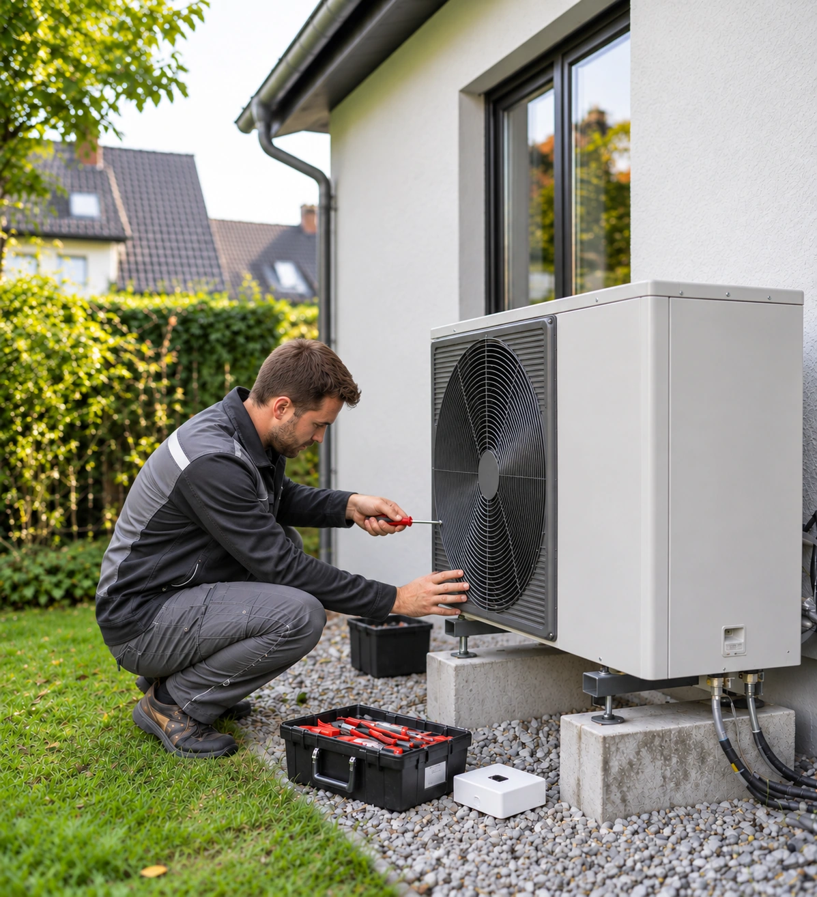

Wärmepumpe verstehen.
Gebäude richtig einordnen.
Eine Wärmepumpe kann eine passende Lösung sein – wenn Gebäude, Heizflächen und Systemauslegung zusammenspielen.
München · Einsatzgebiet auf Anfrage

KLARWÄRME / WÄRMEPUMPENKI-Visualisierung · kein KundenprojektWichtige Faktoren für die Eignung
Gebäudeart, Baujahr, energetischer Zustand, Heizsystem und Aufstellort sollten gemeinsam betrachtet werden.
- Gebäudeart, Baujahr und energetischer Zustand
- Vorhandenes Heizsystem und Verbrauch
- Heizflächen und benötigte Vorlauftemperaturen
- Aufstellort, Schall und bauliche Rahmenbedingungen
Förderung frühzeitig mitdenken.
Förderprogramme haben Voraussetzungen, Fristen und einen festgelegten Antragsprozess. Prüfen Sie die aktuellen offiziellen Bedingungen vor einer Beauftragung.
Welche Punkte sollten Sie vorab prüfen?
Dieser kurze Check erstellt eine persönliche Prüfliste. Er prüft keine Förderfähigkeit und berechnet keine Zuschusshöhe.
Passt eine Wärmepumpe zu Ihrem Haus?
Der Check fragt einige Eckdaten ab und liefert eine erste Orientierung – keine technische Eignungsprüfung.
Häufige Fragen
Kompakte Antworten als erster Einstieg.
Ist eine Wärmepumpe nur für Neubauten geeignet?+
Nein. Auch Bestandsgebäude können infrage kommen. Entscheidend sind Wärmebedarf, Heizflächen, Systemtemperaturen und die konkrete Gebäudeauslegung.
Müssen alle Heizkörper ausgetauscht werden?+
Das lässt sich nicht pauschal beantworten. Die vorhandenen Heizflächen müssen im Zusammenhang mit Wärmebedarf und Systemtemperaturen betrachtet werden.
Braucht eine Wärmepumpe zwingend eine Fußbodenheizung?+
Nein. Auch Heizkörper können unter geeigneten Bedingungen infrage kommen. Entscheidend sind insbesondere die notwendige Vorlauftemperatur, Heizlast und die Auslegung des Systems.
Was kann der digitale Wärmepumpen-Check nicht beantworten?+
Er berechnet weder Heizlast noch Betriebskosten, Schallausbreitung oder eine Förderung. Die Antworten dienen nur dazu, die richtigen Fragen für ein Fachgespräch zu sammeln.